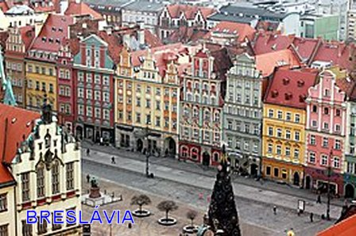
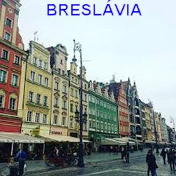
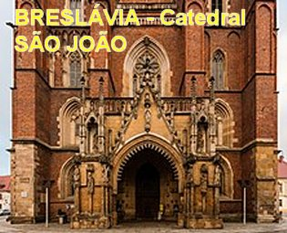
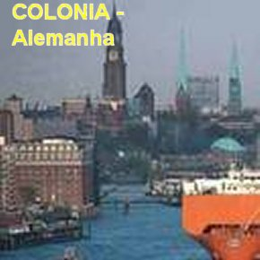
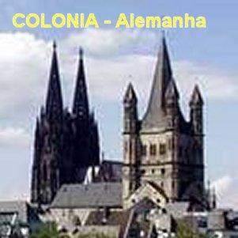
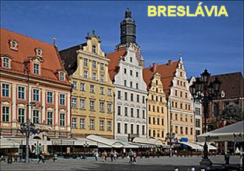
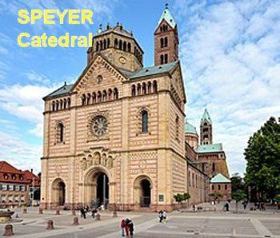
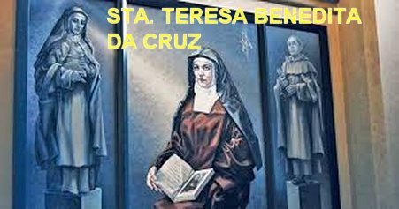

"DERRADEIRAS PALAVRAS"
A História da Igreja guarda uma infinidade de fatos e acontecimentos que evidenciam um admirável fervor amoroso dos cristãos, assim como uma permanente procura do DEUS da Vida.
A Doutora Edith Stein, Santa Teresa Benedita da Cruz, também trilhou um longo e perseverante caminho de busca, e teve a oportunidade de discernir através do raciocínio, a presença inefável e querida do SENHOR DEUS na existência de cada ser humano.
Mulher estudiosa e de renome universal, reconhecida e respeitada na Europa e em diversos outros países, como escritora notável, conferencista admirável, filosofa, judia alemã convertida ao Catolicismo, religiosa Carmelita Descalça, teve a experiência de sentir a presença Divina.
Na Clausura do Carmelo completou o seu celebre livro: “SER FINITO e SER ETERNO”, que aborda o tema do "DEUS pessoal", presente e atuante na vida de todos nós.
Sua existência se encerrou como verdadeira mártir, representando a síntese dramática da Alemanha Nazista, ao mesmo tempo em que proclamou a esperança de que é a Cruz de JESUS SALVADOR que iluminará a história.
"FOTOGRAFIAS"








NOTÍCIAS
Este Site foi construído pelo Apostolado dos Sagrados Corações. Clique aqui ou no endereço abaixo para visitar o nosso PORTAL. Nele encontrará uma apreciável quantidade de Sites sobre o CRIADOR, o ESPÍRITO SANTO, JESUS DE NAZARÉ, sobre NOSSA SENHORA, os SANTOS ANJOS e Sites que apresentam a Vida e Obra de diversos SANTOS. Todos eles elaborados com muito amor e dedicação, fundamentados na Sagrada Escritura, na Tradição Cristã, na Vida e Obra dos Santos e nas Manifestações Sobrenaturais, com a intenção de somente informar a Verdade.
http://www.apostoladosagradoscoracoes.com.br/
Desejando comunicar-se utilize o E-mail abaixo:
contato@apostoladosagradoscoracoes.com.br
contato@apostoladosagradoscoracoes.com.br
FIRMAS QUE DIVULGAM
O SITE